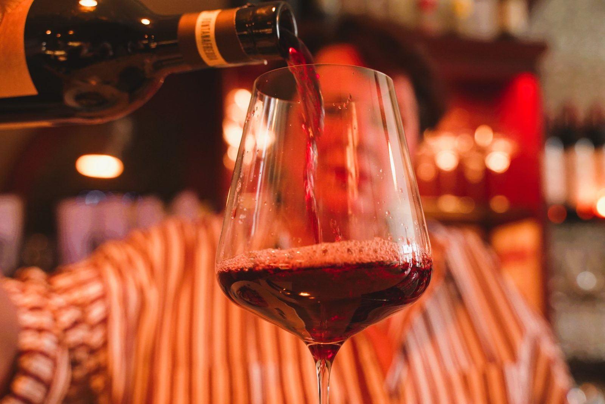
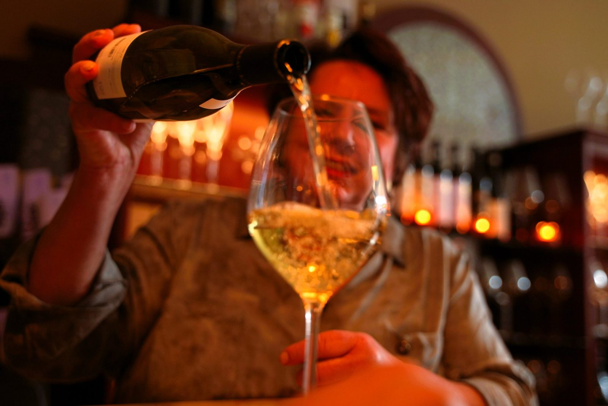
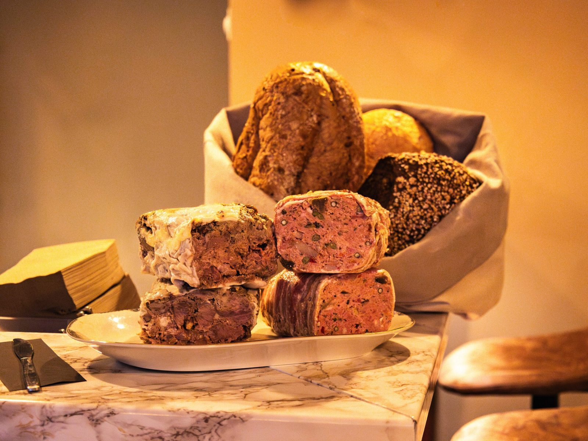
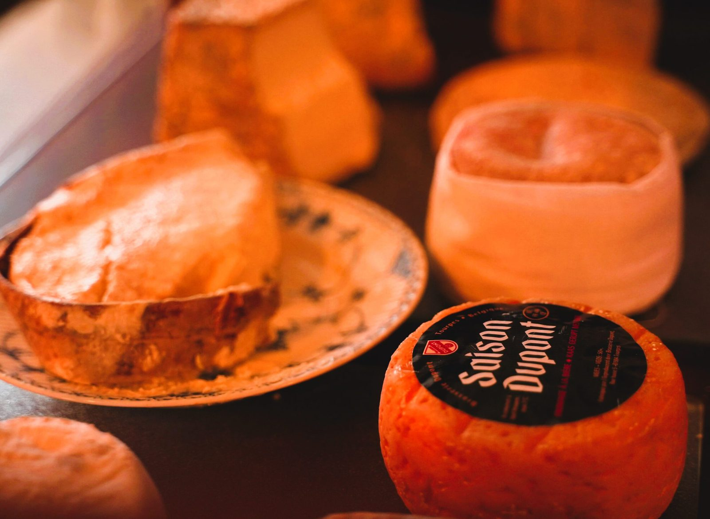
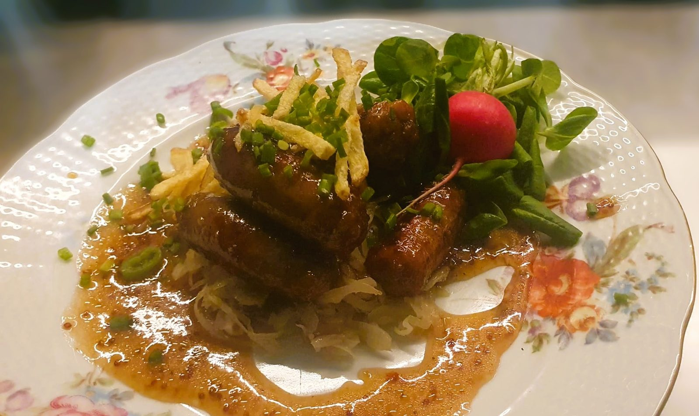
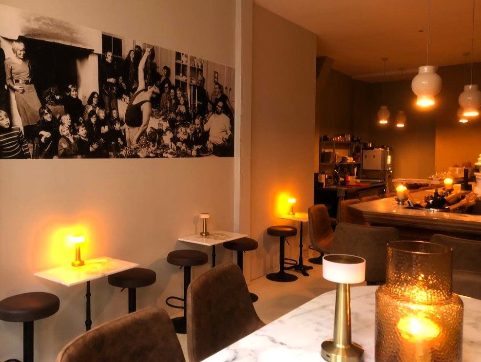
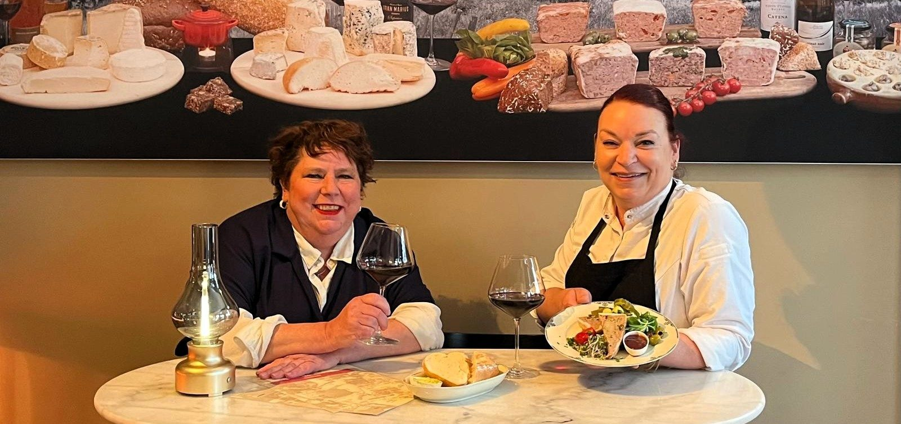

Wijnen
Meer dan 23 internationale wijnen op glas, van de bekende wijnimporteur Vinites uit Haarlem.

Een gezellige wijnbar met Franse ambiance in de Kolperstraat. Onze patés en lekkernijen maken we in eigen keuken, volgens traditioneel Fagel recept.
Patés en lekkernijen maken we zelf, in eigen keuken. Daar schenken we de mooiste wijnen bij.

Meer dan 23 internationale wijnen op glas, van de bekende wijnimporteur Vinites uit Haarlem.

Ambachtelijk gemaakt. Elke week maken we nieuwe creaties, daarmee zijn we lokaal beroemd!

Onze kazenselectie komt van kaasaffineurs Van Tricht uit Antwerpen.

De originele escargots van vader François, pittige borrelballen, kazen, patés en kaasfondue staan altijd op de kaart. Daarnaast hebben we elke vier weken nieuwe lekkernijen die geweldig passen bij onze wijnen.

Schuif aan in onze knusse wijnbar in de Kolperstraat, midden in het centrum. Kom voor een glas wijn met een plankje kaas, of blijf hangen voor de lekkernijen uit onze open keuken.
We doen niet aan reserveren. Kom vroeg in de middag voor de beste plek!
"Zo fijn om weer een leuke, knusse wijnbar met allerlei lekkere culinaire versnaperingen in hartje Den Bosch er bij te hebben."
Hilde B.via Google"Super wijnbar met heerlijke eten. De kok tovert heerlijke gerechten uit haar 2 m² openkeuken."
Emy G.via Google"We waren er vrijdag voor Pinksteren. Het werd lekker druk. Maar persoonlijke aandacht bleef top."
Jaap Z.via Google"Een geweldig goed en leuke wijnbar in hartje 's- Hertogenbosch. Heerlijke wijnen, kazen, pate's en nog veel meer lekkers"
Marc P.via Google
"Als telg van de horecafamilie Fagel heeft mijn wieg letterlijk in het restaurant gestaan."
Pascale Fagel groeide op bij Chez François, de eerste bistro van Nederland. De passie voor gastvrijheid, goed koken en creativiteit leverde de Fagels de eerste Michelinster van Nederland op. Na 14 jaar bistro Le Couple opende Pascale haar eigen wijnbar in de Kolperstraat.
Daar serveert ze met haar team de heerlijkste kazen, zelfgemaakte patés en andere lekkernijen, met een goed glas wijn.
Je vindt ons in de Kolperstraat, in het centrum van Den Bosch. Reserveren hoeft niet: loop gewoon binnen.
Vragen of iets te vieren? Bel of app ons gerust.
We doen niet aan reserveren. Kom vroeg in de middag voor de beste plek!
Wij zoeken versterking voor de bediening en de keuken (vrijdag t/m zondag). Mail Pascale of loop gezellig binnen.